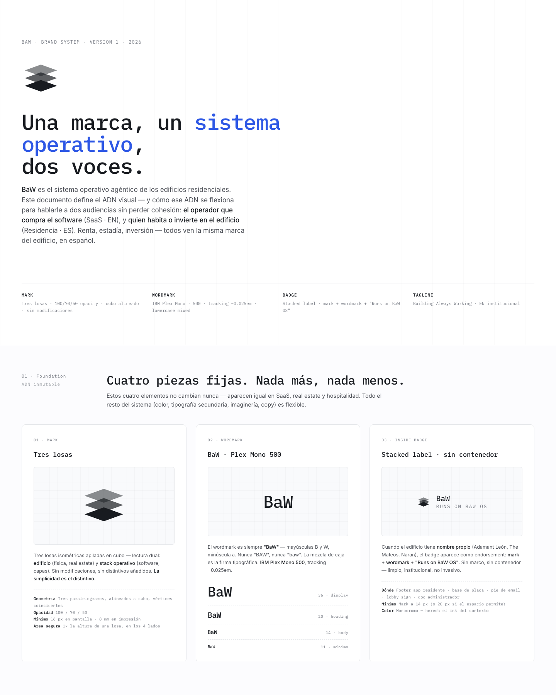
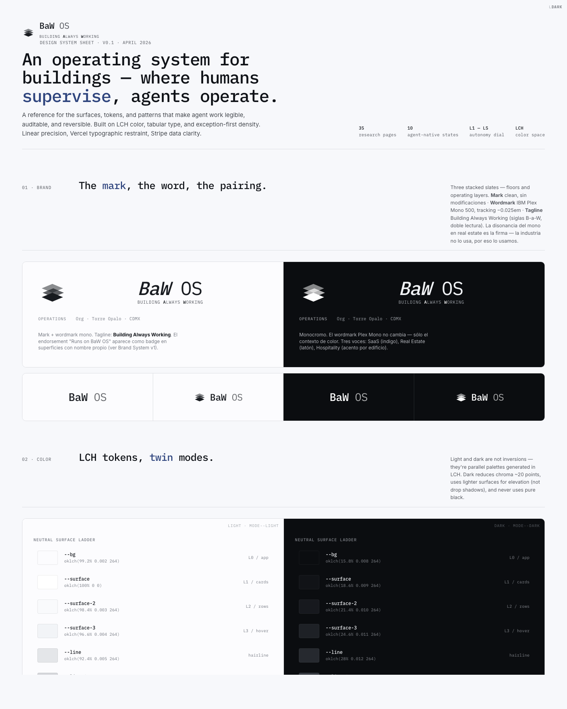
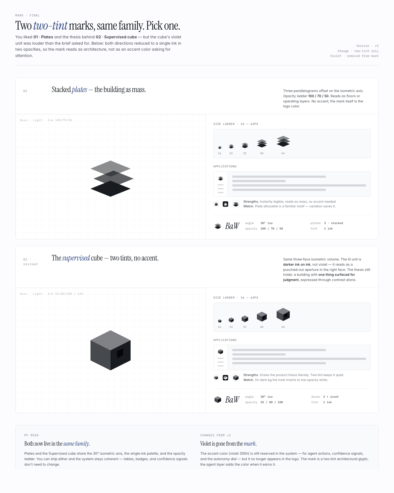
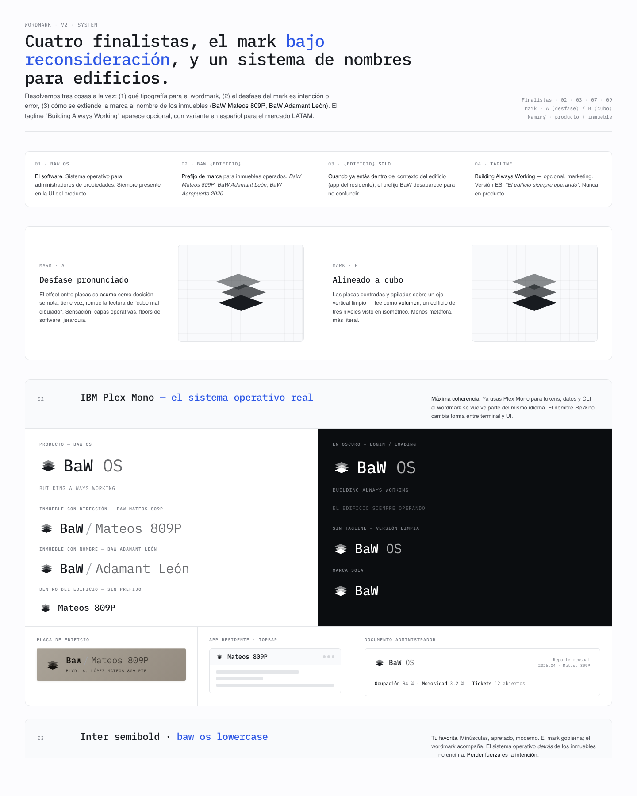

Brand System v2
Dirección visual general: OS para edificios, tono técnico/premium, aplicaciones de marca.
Este hub es el puente entre Figma, el repo baw-design y la implementación en baw-os. Sirve para revisar dirección visual sin depender de setup técnico.

Dirección visual general: OS para edificios, tono técnico/premium, aplicaciones de marca.

Tokens, color, dark/light surfaces, tipografía y reglas de uso.

Exploración de símbolo geométrico/isométrico para BaW.

Opciones de wordmark, lockups y naming para edificios.